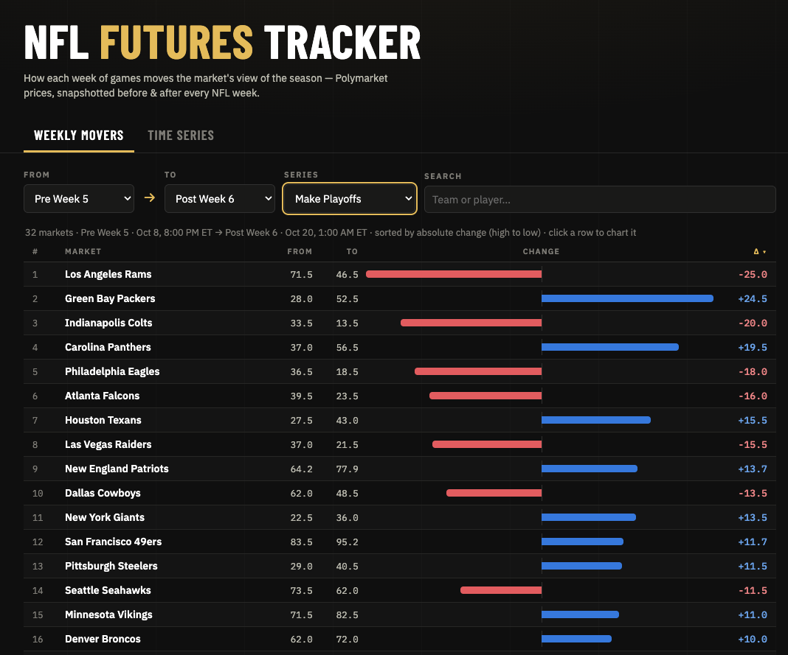
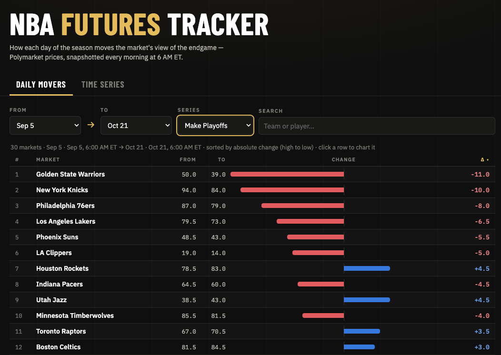

NFL and NBA Futures Trackers
I built two trackers for NFL and NBA futures markets on Polymarket. The point of these projects is to use changes in prediction market prices to quantify how longer-term futures expectations are changing over different time horizons.
Each tracker lets you choose a starting snapshot and an ending snapshot, then see which teams and players had the biggest changes in market-implied probability. You can compare a short interval or a longer stretch of the season, filter by market, and explore the price history.
NFL Futures Tracker
The NFL tracker compares snapshots taken before and after weeks of games. It covers division winners, playoff qualification, the Super Bowl, and individual awards.
NFL playoff probability changes from Pre Week 5 to Post Week 6.

NBA Futures Tracker
The NBA tracker takes daily snapshots at 6 AM Eastern. It follows championship, conference championship, playoff qualification, and Rookie of the Year markets, making it possible to compare daily changes as well as shifts over longer periods.
NBA playoff probability changes from September 5 to October 21.
